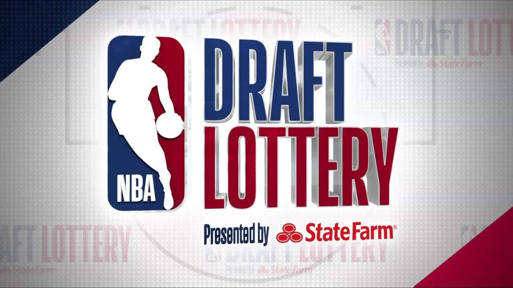
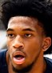
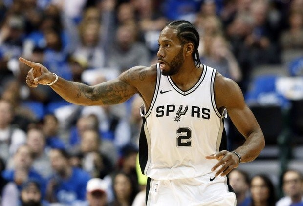
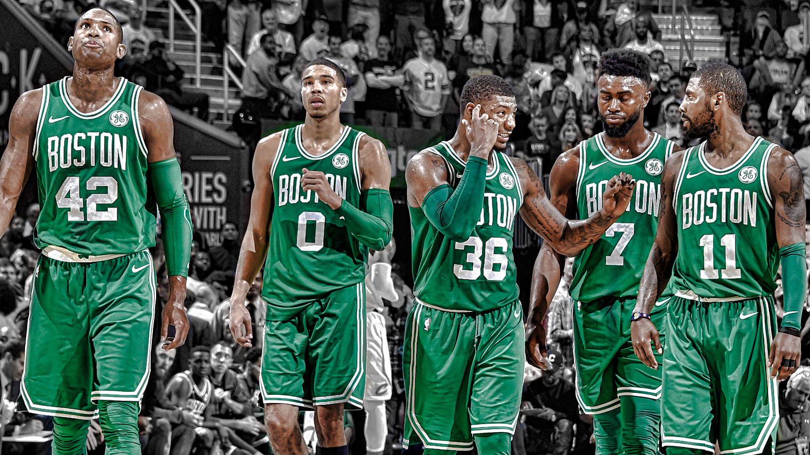
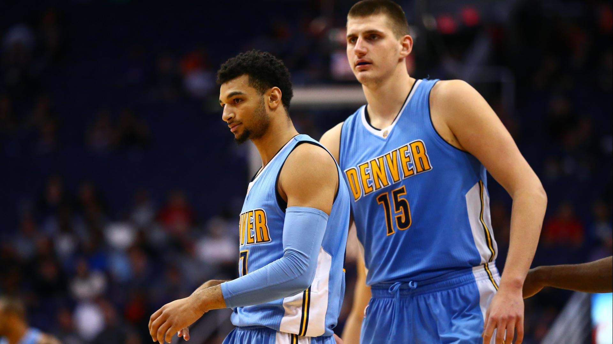
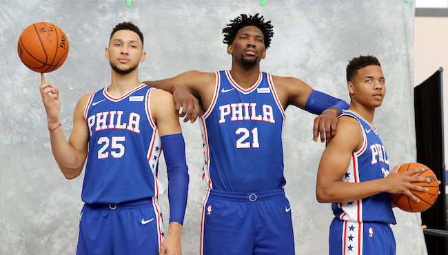

News
Suns to select number 1 in the NBA draft
For the first time in franchise history, the Phoenix Suns get the top pick.
The Phoenix Suns have been in the National Basketball Association since 1968, and have
never received the honor of holding the first pick in the 2018 NBA draft. This is a
cruical moment in recent Phoenix Suns history, as they have struggled to get wins without
much talent on their team, and this first draft pick allows them to choose whichever
young player they want from the cream of the crop first. A top talent prospect can
turn a franchise around and bring some wins to a city lacking them for a while.
Some of the best top picks in recent history have included the likes of Lebron James,
Kyrie Irving, and Anthony Davis. These are all players who have franchise changing skills.
The Suns are hoping to land a top level talent that can give the Suns more wins immediately.
Here are some of the top prospects for this draft class:
Deandre Ayton

Marvin Bagley
Luka Doncic
Kawhi Leonard wants to be traded
NBA superstar Kawhi Leonard is unhappy with his current situation with the San Antonio Spurs.
Finals MVP and superstar Kawhi Leonard of the San Antonio Spurs is not happy with his current situation in Texas. After an injury ridden year, Leonard and the Spurs seem to no longer be on the same terms. During his injury, there seemed to be miscommunication between Leonard and the Spurs.
With free agency looming, many teams around the league are eager to try and pick up a premium two way player like Leonard. Going to be 27 by the start of next season, Leonard is in his prime, and would be an excellent player to pick up and keep long term if possible. Teams that are most interested and would have a good chance at landing him include the Boston Celtics, Philidelphia 76ers, and the Los Angeles Lakers. Leonard still has one more year on his contract, so he could be risky for some teams as he could leave that team next summer and leave them with nothing, which is why the Phoenix Suns would be on the fence of trying to go after him, but could happen given the right price.
Top Young Teams 2018
There are many young teams on the rise, with budding talent and the potential to make noise in the playoffs soon, if not now.
While the whole league is focused on teams like the Golden State Warriors, Houston Rockets, and whatever team Lebron James is on, there are other teams that are on the rise and will have their shot at being one of the top teams in the League. Here's a few teams that in a few years, could be the teams you see in the NBA Finals.
Boston Celtics
A team that already has some top level superstars, the Celtics also have many players under 25 that are turning into valuable players, if not outright stars themself. Being one game away from making the NBA Finals without two of their best players, Kyrie Irving and Gordon Hayward, the Celtics were a dark horse team throughout the 2017-18 playoffs, even despite having the second best record in the Eastern Conference. Some of their young players, including rookie Jayson Tatum, second year player Jaylen Brown, and twenty four year old Terry Rozier, were able to exceed expectations and contribute and shock everyone. With veteran players like Marcus Morris, Aron Baynes, and old reliable Al Horford, the team was able to go farther than anyone expected without a clear superstar. They played as a team, and considering they are expecting both Kyrie Irving and Gordon Hayward back next season, they could be in contention for a championship as early as next June.
Denver Nuggets
The Nuggets have promising young talent with the likes of Nikola Jokić, Jamal Murray, and Gary Harris. All 23 years old or younger, the Nuggets have a nice core to build around. Falling short of the 8th and final spot in the NBA playoffs by one game, not once, but twice in the past two years show that they are closing in on being a perennial playoff team. Given more time, a fully healthy roster, and adding solid pieces along the way, and the Denver Nuggets are on the rise to become a team to be reckoned with.
Philadelphia 76ers
With rising stars like Ben Simmons and Joel Embiid, they brought back winning ways to Philadelphia. Factor in Dario Saric, and recently drafted number one pick, Markelle Fultz, who hardly played due to injury and you have four players with bright futures under the age of 25. They were able to grab the third best record last season with 52 wins, and were able to even knab a playoff series win. They fell in the second round, but considering in the past three seasons they won a combined 56 games, they made a big leap towards being a top team. Now that they have a core of talented young players, add some solid role players and give them some more time to mesh and build chemistry, and they will only get better as a team.
back to top